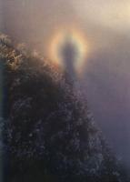
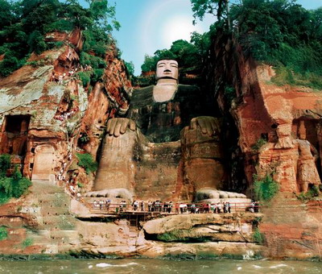
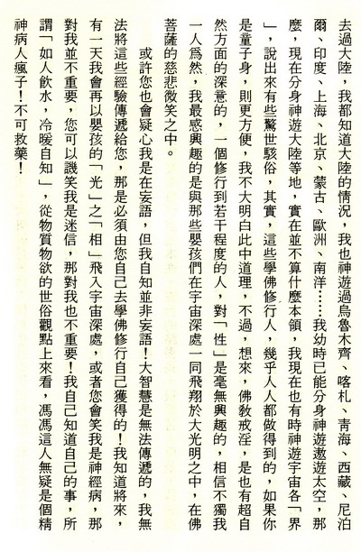
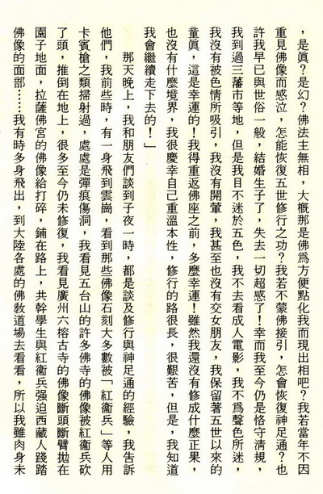
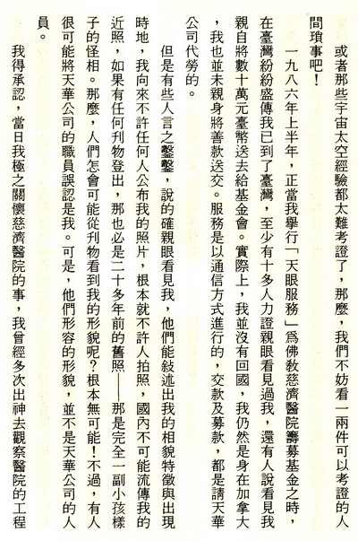

我的浅薄神足通经验
冯冯
去去来来 / 誊录
很多人使用美加护照旅行中国大陆，回来美加之后，说什么峨眉山怎么美，什么三峡如何美，杭州西湖怎样美，北京故宫如何宏伟，云岗石窟佛像如何庄严，桂林山水如何甲天下……他们常劝我也去大陆看看。他们说：“你是加拿大籍，签证很方便嘛，为什么不去一游？随旅行社安排的旅行团去，并不需要很多钱呀！”
“我不去！”我说。
“为什么不去？”他们问。
“你们回来，只说了大陆的风景怎么美，没提到大陆的人民痛苦悲惨的一面，你们去看到的是大陆官方让你们看到的一面，他们没让你们看到的人民贫穷悲惨的真实面，你们去旅行，住的是专门招待外国人与华侨的观光旅馆，你们一步也没走进真正的农村与乡间去看实况。你们没看到大陆农村的共干，怎样威逼孕妇去接受打胎，你们没看到许多妇女把生下来的第一胎是女婴，就把她杀死，因为中共只准一家生一孩，人们生了第一胎是女婴，就没有机会养儿子，因此要狠心杀死头胎女婴。你们没看到大陆每一处城市乡村的共干家家“访问”，去威胁孕妇到医务所接受把次胎打掉，连怀孕久达九个月的都逃不掉。你们没看到共干医务人员怎样用毒针扎进孕妇肚子把胎儿杀死！你们没看到大陆的孕妇自杀逃亡了，在山野饥寒交迫，你们没看到大陆上的共干每月举行的节育英雄庆功会，和那些成千成万的被打胎而惨死的婴儿与孕妇，你们没见到这些两三千万的血污游魂的凄惨悲哭！”
“你在加拿大看得到吗？”有人反驳我。
“我当然都看得见！我全都看得见！”我眼中悲泪涌流：“是的，我都看得见，你们不知我的心多么悲痛！可怜大陆的数亿孕妇多么痛苦，可怜那些惨被共干压迫，打胎死的两三千万未出世的无罪无辜婴儿死得真惨！你们这些人，一些也看不到，你们只看到中共让你们看的‘经济建设’成果，与华侨投资建设的高楼大厦！你们也没看到北京市郊公路陆桥底下流浪饥饿的难民之群，没看到上海北站外面不远的铁路两边斜坡上的饿殍尸体累累，薄棺数以百计地散乱……”
“你去过大陆了吗？有人问，你怎么看见的？”
“我没有去过大陆，我也去过大陆！”
“不懂你的意思？”他们说。
“我此身从未去过大陆”，我解释：“你们说我有加拿大国籍，可知我甚至还未申请加拿大护照？可知我还是持用的中华民国护照？我根本就没有去过大陆！但是，我经常去大陆，你们去过的地方，我全都去过，你们没有去过的地方我也都去过看过。有时候，我一夜同时神游数地，同时在峨眉金顶，在三峡，在白帝城，在昆仑山，在新疆白龙堆，在华山，在少林寺，在西湖灵隐寺……。”
“这怎么可能？”
“华严经有句云：‘一身入定，多身起。’（华严经卷四十离世品三十三之四‘菩萨十种自在’：‘一身入三昧，无量身起三昧自在……’）我说：华严经卷三十四菩萨行品三十一：‘一念入不可说劫。’华严经卷十七金刚回向品二十一品之三：‘一念遍游十方世界。’华严经卷四十一离世品三十三之五：“‘不舍本处，而能游行一切世界。’你们懂这些话吗？那就是说，进入禅定以后，可以同时分身多个出游的。”
“有这样的事？”友人们怀疑地说：“怎么可能？”
“对于从未进入过禅定的人来说，那是不可能的。”我说：“对于曾经进入禅定的人来说，这种分身出去神游是很平常的事，即是所谓神足通。其实也并非什么很了不起的大神通，只是心识的分身而已。要知道，人的识体是很多个别识所汇合而成，就好像是很多条光子之流动，汇合成光束，又像无数的光磁波，汇聚而成一个‘场’，这些‘识’，在常人是不知也不自觉的，更不能分身。但是，学佛人从修行进入了禅定深境，他的‘识束’或‘能场’，是可以分身的，可以以光子的形式神游于任何时空宇宙，更别说是地球上的地点了。”
“这不是神话吗？”有人冷笑说：“哪有那种事情？！”
“这并不是神话，这是人人都可以修得到的，这是禅定的境界，你虽不去追求它，它也会产生，这是符合宇宙物理的，虽然仍非地球物理所知。其实，这也不是禅定的最高境界。”
“你什么时候发现自己有这种能力的呢？”有人问我。
“从小就常常神游了。”我回答：“小时侯，才两三岁，我就常常对老师讲述宇宙深处的许多奇观。我记得那时我给送到方氏宗祠的义学去做寄读生，方氏一族的子弟都比我年龄大几岁，方氏孩子们规规矩矩地上课，我太小，只能在一旁坐着看。大概那时没有就近的托儿所吧？或者是因为穷，母亲把我寄放在方氏义学。我记得我常坐在特别为我准备的小板凳上，在方老师身边。方老师是一位大约三十岁的男子，他一直是我的伴儿，直到后来我足龄上幼稚园为止。每天，他教孩子们念什么小猫跳小狗叫，教他们习字，写‘上大人孔乙己化三千七十二’，学生习字的时候，他就坐下来跟我玩，他会得耐心地倾听我讲些可能连他也不懂的故事。
“你讲些什么呢？”
“我讲一个有光环的大圆球，我讲飞来飞去的扫帚星，飞来飞去的冰山怪石，还有发光的一大团一大团很热的气体，还有很深很深的黑暗不可测的漩涡深洞，又讲看见很多‘光人’飞来飞去，还有我同时在几个发光的气体大圆球上飞翔游玩，又在万丈的火焰巨球上游玩，有很多我这样的小孩，和我一起飞翔，他们也都是光……”
“这些话不像是两三岁大小孩所能讲的呀！”友人们说：“而且，在三十多年到四十年前，太空科学也还未发达，你怎么知道这些的呢？”
“方老师被我吓了，”我笑：“他说我的神经有毛病，幻想太多，因我每天讲的都不同，都是离奇古怪的，都是当时的科学还未发现的宇宙奇象。他很吃惊，但是他很喜欢听我的‘胡说八道’。方老师与我成为忘年之交，他从我听到了他向所未闻的很多奇象。
“他没问你怎么知道的吗？”
“有！”我答：“我告诉他是我去看到的，我说我一睡着了就去天空很深很深的深蓝色里。方老师说我是做梦了。但是他说不明白怎么三岁的小孩会做那么多奇怪的太空梦？他问我怎么样去的？我说心中想去，就立刻飞到了。有时同时飞到很多气体星球上面，有时候飞到旋转的巨大无比的发光蛋黄上面，好热好烫的──那时候我还不知道这些叫做星云漩系（Galaxies）。方老师说我神经不正常，是个畸形心理儿童。后来我进了幼稚园，把小猫小狗小朋友和女老师都画成骷髅骨，内脏也画出来，把女老师吓得半死。问我怎么回事，我说看见是这样的嘛！不过，到了小学一年级以后，我就不讲那些怪话了，也不画怪怪的透明画了。”
“你不再看见了？”他们问。
“这是不是预感呢？”他们问。
“比较少见了，不过，我仍记得有些事，我画了一座宏伟的西洋大厦，是用虚线缀成的，还画上很多灯泡，我母亲问我这是什么，我说我看见的，有海，有雪山有船，有这座用灯串缀成的大楼。母亲以为又是我的幻想──我的幻想狂已经是出名的了，老师们常告诉我母亲的幻想狂──这座大楼，直到一九六六年，我们在加拿大与友人往游维多利亚市，才第一次实地看到。那是一座省府大厦，我一看就说，这地方我小时来过，我认得出它。在夜间，它的灯泡全亮了，缀成一座古老的灯泡宫殿，正是我幼年时所见到的。”
“也是，也不是。”我说：“我是小时来神游来见到的，但我并不预知我于二十多年后会来此地。”
“你这些经验很奇怪？”有人说。
“没有什么奇怪。”我说：“就拿你们来说，你们不是也曾梦游吗？你们不也是曾经去过一些什么地方，看见的景物，似曾相识吗？你们不也梦到自己身体飞翔吗？”
大家都点头同意：“对，有的。”
“这就证明了人人都有出神远游的本能了。”我说：“你们自己不注意而已。”
“但是我们没有分身梦游数地的经验呀！”有一位男居士说：“这是对我们来说很新奇的。”
“学佛修禅就会有这些境界，”我说：“虽然我们学佛的目的并不是在追求这些境界，但是它是必然会发生的，这是潜能释放而已，并非什么邪魔境界，也不是成佛境界，只是很自然的超自然现象，无足大惊小怪。这只是学佛进入禅定的必经境界之一。假如我们欢喜，就着了魔了，假如我们厌憎之，就是着了空魔了！总之，见境勿喜勿恼勿惊，一切听其自然，无动于中，不去追求，也不予摒斥。如果你们今天听我说有此神游的境界，你们就存心想求境界，那是很危险的！”
“我不信真有人能出神分身遨游！”有一位女士说：“我是游遍了大陆名胜的，冯居士，今天我要考你一考，你试讲一下你神游大陆各地的风光，若讲得对，我才相信，我才信佛！”
“好！”大家都鼓掌要听我说。
“这种印证本来毫无必要，也没有意义，”我笑道：“不过，既然你坚持，我们不妨随便谈谈吧！”
“一九七三年吧？”我回忆说：“那几年我运气坏透了，学做生意，赔了钱又被人控告，自己又失业，身体又不好，还得寄钱回乡去接济重病的外婆，与贫困的父亲！我母亲又多病，我那年真是精神痛苦极了，唯一的生活收入来源就是 ##杂志的稿费，但是，他们改变了风格，以刊登爱情小说为主，不再采用我的文章了。我心情的恶劣，真是无法形容。”
“我的另一身，同时在三峡的神女峰下飞翔，我在奔腾险恶的江水上面飞，我喜欢三峡这一段风景的险阻壮丽和凄迷的云气诗意，我贴着石壁飞翔，看见石壁上的诸葛孔明士卒凿成的栈桥方洞──已经没有了栈桥，只剩下了小孔，我看见一队一队的纤夫，他们赤膊露体，在险滩上拖着纤，痛苦地哼叫着，我热泪上涌，我飞身下去帮助他们，我去推动他们的木船的巨帆，他们看见船动了，只有他们自己的船帆有风，别的都没有，“这风真奇怪啊！”他们说：“这是什么风？”
“有一天，我在似梦非梦之间，分身同时飞到了峨眉山的金顶和几处地方，一身在峨眉山的金顶舍身崖，给彩虹般的佛光圆圈罩住，显影在云海上，旁边的游人惊呼：“怎么回事？没有人在崖上啊，云海上却现出佛光圈内人影？”他们有些人就下拜，不住念佛，另外不信佛的游客都呆呆地看着。我心念一动，立刻就跳出光圈，来到报国寺前的石栏上戏弄猴子。那些顽劣的猴子，是会抓人咬人的，一些也不像是修行的猴子，我在它们之间左点右呵痒，把它们成群都吓得吱吱奔逃。游客不知道猴群为什么突然飞逃，我就哈哈大笑，可是没人听见。
“我仰望着这数百尺高的巨大佛像，心中有说不出的宁静与感动，佛像微微地笑，向我点点头，我慌忙跪下来，就跪在江面的水上──佛像向我点头，这不是第一次，我记得我常常在梦中进入寺庙或宫殿，那些佛像、菩萨、罗汉、守殿神将，都站起来，含笑向我点头迎接我。而庙中的香客完全都没有看见我，也不知道佛像起身──这都是真实的话。我至今仍常常在梦中去到喇嘛佛宫，佛像含笑起迎，我上前叩拜──但是，我以前仍未到过这江边的巨佛所在，也未料到巨佛向我点头笑迎，我慌得连忙叩拜不停。
“我的第三身，飞临一处三江汇合的江面，我看见一艘小船，上载有十多个游客，正在向着一处峭壁驶去，峭壁的中央坐着一座巨大无比的佛像，佛首在峭壁顶上，佛脚在江边，佛脚背上站了四、五十个游客在拍照，佛面的表情非常慈祥，佛身左边下面有一座韦陀菩萨刻像，与巨佛一样，也是从峭壁石崖雕刻而成的，佛身右边有曲曲折折的几百石级。有游人拾级而上，走到崖顶的一座小亭去眺望江山景色。
“我可以飞上佛身，但我不敢冒犯，我只飞跳上了小船。船上的十多人都毫无感觉我的存在。舟子撑船，竹竿点着水底的石崖，清脆传响，小船慢慢靠岸，游客上去，他们一个人也不拜佛，只有我独自跪在崖下佛脚脚趾之前顶礼，我是从左边韦陀菩萨像这边上去的。
““回来吧！孩儿！”我感觉到巨佛向我传达心意：“你迷失很久了！还不回来？”
“我突然泪下如雨，哽咽不胜，匐伏在佛陀脚下，孺幕之情，难以形容，我哀哀地饮泣着，忏悔着，不知过了许久。”
“忽然地，我的三身合一，突然醒来，依然身在温哥华。窗外月明星稀，正是子夜三时许，我母亲在邻室熟睡。知更鸟在外面声声催啼。我泪痕仍在。
“我明白了，我知道我从七、八岁起，有二十多年是迷失了，我只知名利追求，我虽亦念佛，而并未修行，我知道我的痛苦都是由于三毒引起的，我失去了我的超感本能达二十年之久！我已逐渐远离了佛法！从此，我立志重返佛门！我也开始了我的佛教写作！写出了我第一篇佛教随笔‘永忏楼随笔’──题名‘我所知道的佛教’。这十多年来，我渐渐恢复了我的功力，天眼、慧眼、法眼，这些五世修行得来的，也都渐渐恢复了，我也一步一步地走上弘法济度众生之途，我今天已经很知足，很充满了法喜！”
“啊！原来还有这些曲折？”大家都说：“真想不到！”
“你说你去的那座巨佛，”那位女士说：“是我们的四川大佛，你说的峨嵋山佛光与猴群，也都正确，我是四川人，对这些都很熟，现在我相信真有佛菩萨了。”
一身入定，多身起，是神足通的基本。我化为三身去游峨嵋、去拜乐山大佛，是真？是幻？
|  |  |
 |
 |
一九八七年一月至三月期间，我曾经出神去香港、台湾桃园、美国、南洋等各地多次，那是为了要尽一点点心力救助病人。
香港的是姓C的一家人，去年十二月份，他们的五子夫妇生了一个男婴，一生下来就发现有先天性的严重疾病。C家的一个女儿打电话来问我那小孩是什么病？我立刻答覆说是：“先天性心漏孔”与“肝炎”及“气管狭窄”，我的诊断不久就获得医院证实，医生要为婴儿开刀。这孩子是不足月的，身体很弱，而C家环境不好，做父亲的只是一个工厂的小工，收入微薄，怎支持得起庞大的医药与开刀费用？
C家现在才是很虔诚的佛教徒，过去则是未识佛理的，只知拜一些神祗。当他们找我知时，仍未归依佛法。C家女儿向我求救，五子也亲自向我求。我告诉他们，这是他们过去拜祀鬼神，杀鸡杀鸭，杀猪杀羊，积下的孽报，我劝他们立即改过，改为信佛吃素，多行善事，勿再杀生媚祭鬼神。我当为他家向观音菩萨祈求特别恩典。
C家五子在香港听说过我曾出神救治过一些严重的病人，他就苦苦恳求我出神去救他的儿子，他声泪俱下地跪在电话机旁向我哀求，他的妹妹在温哥华时，也曾受过我出神加持，她也打电话来再恳求，我向来对于环境不好的人最心软，我明知我不能破因果，但是看见C家好可怜，我只好答应了。
C家的老父，年逾八十，在去年十一月时，已经患重病一次，当时C家女儿打电话来向我求救，我答应他家，我将以一阵红光形式到达。因为我的心光是彩虹色而以红光为多的，我当时已看到C老伯是中风与前列腺肿胀不能排尿，我说这都需要医生施行手术，我只能来几分钟帮助他的体力。我心念要如此帮助他，C老伯在香港的医院就有了感应了，他看见红光一闪，他觉得身体就舒服多了很多。后来竟无施手术就出院了。现在正走向康复途中。
圣诞节之时，C老伯亲自写了一首五言律诗在圣诞卡片上，寄来给我，他说感谢我“延他残生，大恩难报，”“今后将忏悔和礼佛修行，尽力帮助贫病。”我感到非常欣慰。
然后是C老伯的孙儿，就是上文提及的男婴出生了，发生了上述的病情。我觉得，助人须助到底。我问C家五子，需不需要我寄一点钱给他？他拒绝了，他说钱不敢受，只要我答应出神去救他儿子就好。我告诉他：“这孩子的心漏孔必须由医生做手术补好，气管也须动手术治才好！”
“可是孩子才出生一个星期呀！”C君哭道：“怎受得了那么多的大手术？恐怕会死呢？”
“这个险是必须冒的！”我说：“若不医治，生存的机会就更微！”
我答应我会出神来尽力维护他的儿子，但是我不敢保证一定成功。我只能尽心而已，因为我不是菩萨，我只是凡人啊！我们必须祈求观音菩萨的佛力加持才行。
小孩的第一次心脏手术之时，我出神去看了，我尽力把自己的真力灌入孩子的身中，我心念如此一动，是以红光一闪而行事的，光是那么微弱，不过我相信他们会看得见。
孩子安然无恙地度过了这次心脏手术后的虚弱时期，后来，孩子第二次手术，开刀割除气管的障碍，我也出神再去，并且为他再祈求观音菩萨，一个出生才两、三个星期的不足月婴孩，怎能安度两次大手术？我又有什么力量救了他？这可说是我尽心而已，真正的巨大神通佛力，还是来自观音菩萨呀！
然后，是台湾桃园的一位范文正老伯，他的左脚膝盖痛到不能行动，中西医药都用过，也没有功效，他向我求援，我看这位老伯很慈善，很肯乐捐济助贫病，我就答应了一试。我和他约好时间，我在这边心中立念要化一阵红光去为老伯治膝，我要用我的力量灌入他的膝内，同时，我为他祈求观音菩萨。
后来，老伯来信，再三称谢，他说突然感到光热注入膝内，当日就可以起立行走如常，如今已健步如飞了。最近来信说已可登山散步。
像这样的小事，道谢的信已积满了几个纸箱，或者这些全是偶然的巧合罢，您可以说我是附会，可以说我是在讲神话，但是，当事人与我，都肯定地心知，那都是真实的。我认为，我并非有什么神通，但是，我的强力的救助他人痛苦的愿望，是促成心力光束射出去的原动力，而病人方面，他们的心屝愿为我打开，他们愿意接受我的微弱的心力，或者，在这双方合作的情况之下，激发了病人的勇气与自信心和自疗求生的力量吧？如果您不信超自然或神通，至少也应相信现代超常心理治疗的神奇力量！
有些佛教大德每每相戒：‘不可未证言证！’‘不可自言神通！’这些都是善意的规劝名言。但是，所谓神通，已经是逐渐真相大白的合乎自然的潜能而已，并无神奇神秘可言。只是未晓新科学的人视之为神奇而已。而且，神通的获得，只不过是学佛者从禅定中释放出来的潜能，为什么不该公布给世人知道？为什么不该用来帮助苦难的人们？为什么要秘藏自珍？为什么要视之为妖魔邪恶？为什么？
若说‘未证言证’，那么，都要等到证正果才可以济助世人，恐怕世人受苦受难早都已死光了，谁能活到接受已证的大德的证言法施？
学以致用，一面学，一面实用，六度万行也该是一面学一面行的。没道理躲在深山自己修炼成仙，那样的人，纵能悟得什么，也永远不会成为菩萨，不会成佛。
我未敢自许为六度万行，但我的确在努力地以点滴之水，试图润沫车辙之鱼，不能等到去东海取来大海汪洋之水。
悲愿生神通！这就是神通的秘密与来源！
书名：天眼慧眼法眼的追寻
作者：冯冯
出版：天华出版事业股份有限公司